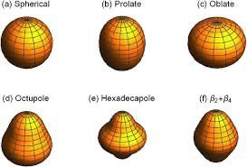

Unit 5: Collective Models#
We saw in the previous unit that while the simple spherical shell model is capable of describing basic properties of nuclei like magic numbers, it fails to capture all features observed in the chart of all nuclei.
The way to deal with this is to use a combination of concepts often referred to as Collective Models. The idea of a collective model is to merge concepts where the behavior of individual nucleons is used, as in the Shell Model, with aspects where the behavior of the nucleus as a coherent single entity is considered.
In a sense, the Semi-Empirical Mass Formula is already a collective type model as it involves combining elements that take account of individual nucleons, such as the Pairing Term, with elements that are about the Bulk Nucleus as a whole, such as the Volume Term. A collective body aspect in which no account is taken of individual nucleonic state or behavior, and an individual particle aspect, where individual nucleons take on discrete energy levels and states. The most interesting area where a collective treatment is needed is with large nuclei, like U-235. Such nuclei show deformities in their shape and exhibit exotic behavior that can be modeled as either vibrations and rotations of the bulk nuclear material acting together.
The motivation of the Collective Model is to assume that an interaction occurs between the outer nucleons and the closed-shell core of these nuclei, leading to deformation of the whole nucleus. The result is that there is still a central nuclear potential due to the filled core shells as before in the basic Shell Model, with nucleons in the outer shells moving under the influence of this core potential. But importantly, the potential is now not necessarily spherically symmetric. It may be deformed, either permanently or actually changing with time. The concept here is to invoke an extension of the Liquid Drop and Shell Models to include the physics associated with deformation of nuclei away from the basic spherical shape to more complex shapes, as illustrated below:

The combination of the single-particle and liquid drop models presents very difficult theoretical problems, including the need for the Single Particle State to be calculated for both spherical and non-spherical potentials. That is beyond our scope here, so we concentrate on the qualitative features.
Allowing a nuclear core to be deformed in our model changes the possible Shell Energy Levels, because the Nuclear Potential Well shape is changed for deformed nuclei. This introduces two new types of Collective Modes of Excitation and with them associated energy levels due to (a) Vibration states and (b) rotation (Rotational States). We expect that the allowed energy levels for both of these modes will also be quantized in some way, depending on the shape of the nucleus.
Rotational States#
Let’s consider the rotational states first. We can start by describing the shape as a revolution around some central point, with Cylindrical Symmetry, and two extreme cases as shown below, following the prolate and oblate structures we saw previously when considering the electric quadrupole moment of nuclei.
If we modify our model to remove the requirement that nuclei are spherical, what we find in the full derivation of the Schrödinger’s Equation is that wave functions based on nuclei occupying physical spaces based on Laplace spherical harmonics are also valid solutions. Since a linear combination of any two equations that satisfy Schrödinger’s Equation are also valid solutions, we could consider particle wavefunctions that are arbitrary combinations of spherical harmonics. However, what we actually find is that when considering the possible discrete energy levels of the nucleus, different harmonics correspond to different states. Laplace Spherical Harmonics are described in general form as \(Y_{l,m}\) and are shown in their base form in the image below. You’ll see that \(Y_{0}^{0}\) corresponds to our simple case of a plain sphere.
To better understand the relation between spherical harmonics lets consider the simplest possibe case for a deformed nucleus. Imagine we have for the sake of argument a blob of our hypothetical nuclear material, and we deform it (squash it down) so that it has an oblate structure like in the previous unit. This change in shape can be represented in our waveform by considering a state which is a combination of our spherical form \(Y_{00}\), and the first quadrupole spherical harmonic corresponding to \(Y_{20}\) as in the picture below.
We express this algebraically by saying that the surface of our nucleis has a radius at a given angle in spherical co-ordinates as $\( R(\theta, \phi) = R_{av} [Y_{0,0}+\beta Y_{20} (\theta, \phi)] \)$
where \(Y_{20}\) is a Laplace spherical harmonic representing the distance from origin to the surface of the shape, \(R_{av}\) is the average nuclear radius, and \(\beta\) is a deformation parameter. As shown in the pictture below we expact that as we increase \(\beta\) the shape of our nucleus slowly transitions between \(Y_{00}\) and \(Y_{20}\) states. In reality our deformed nuclei may be somewhere in between.
Note also that \(Y_{0,0}\) is just our spherical shape and has a constant value of \(Y_{0,0}=1\) so we’ve drpped the angular dependence in the equation. The important thing to notice is that if \(\beta\) is equal to zero, then we have only the spherical component, and we arrive at a spherical nuclear shape as in the figure. Exactly what we want in the no deformation case!
If \(\beta\) is non-zero however we get slight modifcations of our nuclear shape as a result. The deformation parameter \(\beta\) can be expressed in terms of the actual nuclear radius as $\( \beta = \frac{4}{3} \sqrt{\frac{\pi}{5}} \frac{\Delta R}{R_{av}} \)\( where \)R_{av} = r_{0}A^{1/3}\(. In our simple case \)\beta>0\( corresponds to a prolate nucleus as we've stretched out the top, and \)\beta< 0\( corresponds to oblate as we've expanded the sides. \)\Delta R\( here repesents the difference beteweent he semi-major and semi-minor axes (long and short sides) of the nucleus itself when it is deformed. A typical value for \)\Delta R$ is around 0.3 fm.
Note here we are talking of a permanent deformation in shape. Thanks to the charge distribution we thus expeet to get a finite Electric Quadrupole Moment. In addition now however we also see possible rotation states as along certain axes (perpendicular to the axis we squashed our nucleus) the shape is not rotationally symmetric. Based on the nuclear shapes shown above you can imagine being able to rotate the nucleus rotating along two axes, either around the page, or out of the page.
It turns out the Electric Quadrupole Moment of a deformed nucleus is directly related to the deformation of the nucleus itself. It is given by:
This is the intrinsic electric quadrupole moment for a deformed nucleus at rest. Note how it depends on a surface area \(R_{av}^{2}\), the number of protons \(Z\) and the deformation parameter. You can see how \(Q\) becomes zero for the spherical case, i.e. when \(\beta\) = 0.
So, what about the Rotational Energy Levels? In classical mechanics, this comes from considering the kinetic energy of a rigid rotating body with angular momentum (\mathbf{R}) (note this is a different symbol than the radius used above).
In the classical case, we get the equation for the kinetic energy of a Rigid Rotation as here, based on the picture that shows the angular momentum axis.
[ E_{R} = \frac{R^{2}}{2I} ]
where (I) is the effective moment of inertia.
Now, switching to the quantum mechanical case, the energies are given by solving the relevant Schrödinger Equation. We replace the angular momentum (R) with an operator acting on the wave function. Then the Eigenvalues and Eigenfunctions are given as follows:
[ \frac{R^{2}}{2I} \psi = E_{J} \psi ] [ R^{2} Y_{JM}(\theta,\phi) = J(J+1) \hbar^{2} Y_{JM} (\theta, \phi) ] [ E_{J} = \frac{\hbar^{2}}{2I}J(J+1)~~~~~J=0,2,4,\ldots ]
Note that there is some Reflection Symmetry in this solution, so it turns out that there are no odd (J) values and the only allowed (J) values are 0, 2, 4, etc.
Now substituting the quantized allowed (J) values, we can write out the sequence of energy levels as follows:
[ E(0^+) = 0 ] [ E(2^+) = \frac{\hbar^{2}}{2I} 2(2+1) ] [ E(4^{+}) = 20\frac{\hbar^{2}}{2I} ] [ E(6^{+}) = 42\frac{\hbar^{2}}{2I} ]
See how we get a neat sequence where the energy levels go as 0, 6, 20, 42, etc., times a constant value based on the nuclear spin. The states are labeled by the (J) value as shown, and the Parity, which is always positive here.
A useful trick with this sequence is that if we happened to have measured one of the values, then we can predict the rest, using the sequence. For instance, if we consider the (E(2^{+})) level or (E_{2}), the first excited state above the ground level, then we can write:
[ E_{J} = \frac{1}{6} J(J+1)E_{2}~~~~~~~~~J=0,2,4,\ldots ]
As an example, say we know the first excited state of Erbium-164, i.e., (^{164}Er, E(2^{+}) = 91.4 keV), then using the equation above, we can predict the Rotational Energy States of Erbium for the higher levels (E(4^+), E(6^+), E(8^+)), etc.
Vibrational States#
We’ve discussed rotation states as mentioned above, where the deformation is permanent, and we get energy levels associated with quantized allowed rotations. But in large nuclei, we can also get vibration states in which the nuclear fluid undergoes continuous shape changing or shape oscillations while maintaining constant density. These are the vibration energy states.
Note
The Incompressible Nucleus: A vital point, as throughout when we consider the nucleus, is to remember we are dealing with an incompressible object. It may change shape as we have seen, but the density must remain constant.
The Vibration states we introduce are time-variable changes in surface shape that yield quantized standing waves. That is, what we need to envisage here is standing wave patterns. In the quantum world, only certain such standing waves are allowed, as determined by the relevant quantum numbers. The details are beyond our scope here, but we can gain a general picture.
Note that the average shape might be spherical, or it could be a deformed shape, depending on the nucleus. Either way, the instantaneous shape will be non-spherical.
Firstly, we need to describe the surface. This is done again using Spherical Harmonics and Legendre Polynomials but instead now we consider time-varying giving standing wave patterns based on the harmonics. In spherical coordinates, we can consider the instantaneous coordinate of a point on the surface at θ, φ as a linear combination of many possible harmonics as before
Note how this time we include all possible spherical harmonics (Y) that may contribute, and each possible shape has its own amplitude (\alpha).
The basic modes of vibration are determined by the (\lambda) factor here as:
(\lambda=0) Monopole - forbidden
(\lambda=1) Dipole - Not considered
(\lambda=2) Quadrupole
(\lambda=3) Octupole
The first state is forbidden because the oscillations over time only modify the radial component ((Y_{0,0} = 1)). If (\alpha_{0,0}) had any time variability, this would result in fluctuations in the density of the nucleus, which is forbidden in our incompressible model.
The second state is not considered because the dipole form produces net shifts in the center of mass (all neutrons and protons moving up and down together). This cannot result from internal forces, only external ones, so it is not worth considering in our nucleus-centric model.
The first important vibrational model is therefore the Quadrupole. The various allowed vibrational states in nuclei are very complicated, but we can get a feel for their behavior. For the simplest even-even nuclei, the Ground Vibration State is designated (0^{+}). If we add a unit of Quantized Vibration (a phonon) (1\hbar \omega), we get to the first quadrupole state designated (2^{+}).
The quantized unit of vibration is called a Phonon. The first level can be thought of as the First Harmonic of vibration. We can think of (\lambda) as a unit of angular momentum, (l), so the parity of this state ((-1)^{2}), i.e., positive. If we add another phonon, we start to see higher harmonics. These are labeled by the (\mu) in the equation, ranging from (\mu=-\lambda) to (\mu=+\lambda), i.e., a total of (2\lambda +1), that is (5) for (\lambda=2). As we have two phonons, there is a lot of symmetry, so we end up with (3) possible substates, labeled (0^{+}), (2^+), and (4^+). This is summarized below in the example of (^{114}Cd).
Notice that for higher states, since only even values of (J) are allowed, we end up with all the higher states of our even-even nuclei also having positive parity.
An important point to note here is that the basic energy levels at each phonon level are equally spaced, in units of (1\hbar \omega). So, unlike the rotation energy levels, where the spacing increases in a sequence (0, 6, 20, 42, …), the basic vibration energy levels are evenly spaced, with each level having finely split sub-levels at each basic level due to the phonon couplings.
The basic vibrational energy levels can be written as follows $\( EE_{N} = \hbar \omega_{l} (\frac{2l+1}{2} +N) \)$
So here we see that the Quadrupole ((l=2)) Ground State (no phonons) has an energy level at $\( E_{N} = (N+\frac{5}{2}) \hbar \omega \)$
Of course, a nucleus can show both Rotational and Vibrational energy levels, and these levels can overlap. Note that in general, rotational levels can go up to higher energies than
vibration, the latter reaching typically 1-2 MeV.
Note that as nuclei move away from having a closed shell, it gets easier to excite rotation and vibration states; they are more distorted as we expect. So these nuclei tend to have lower collective mode excitation states like this.
At half-filled shells, we get the extreme, with more likely permanently deformed states, strong rotation states, and large electric quadrupole moments. In extreme cases, like U-236, we get lots of levels indicating a very deformed nucleus. It is not surprising we end up seeing spontaneous fission as that below.
So we have seen in this unit again that the nucleus is a complex object. To understand all the energy levels and behaviors, we need a Collective Model that combines the Shell Model with the bulk behavior of nuclear fluid. In the next few lectures, we’ll probe further into the behavior of excited states of the nucleus and how this can lead to different forms of spontaneous radioactive decay.
5.3 Gamma Decay#
The shell model predicts excitations when protons or neutrons move up to a higher energy level
Example 130Sn 50 protons (magic number) 80 neutron (magic number -2) Lower excitation corresponding to neutron across the latest occupied shell

Low energy levels of 130Sn
Moving one neutron from 3s1/2 to 1h11/2 leaves two neutrons unpaired Combine J=1/2 with J=11/2 we get states with 11/2+1/2 and 11/2-1/2 Similarly a neutron can be promoted from the 2d3/2 level With states 11/2+3/2 to 11/2-3/2
Another alternative is to break a pair of two neutrons in the 1h11/2 shell
All these create energy level around the 2 MeV line
A state at 1.2 MeV is observed 2+ state


In Unit 3 we saw how nuclei can be in excited states Protons and/or neutrons in higher energy level in the shell model Collective models, vibration and rotation states
Similar to atomic physics, a nuclear excitation releases a photon to go back to the ground state
Excited states have a lifetime of <1012 s
Photons have energy of 1 - 10 MeV. Gamma rays


The photon emitted will carry a total angular momentum L This includes also the spin of the photon Hence the minimum value of L is 1
If we indicate with Ji and Jf the initial and final spin Ji = Jf+L Quantum mechanics implies that  L=1, dipole radiation L=2, quadrupole radiation L=3, octupole radiation, etc…
The lower the value of L, the more probable the transition
NOTE: If Ji=Jf=0. The transition is forbidden
Parity is conserved since these are electromagnetic transitions Electric multipole radiation has parity (-1)L Magnetic multipole radiation has parity (–1)L+1
 OOf the three decays we discussed in
OOf the three decays we discussed in
Filled shells have a total angular momentum, J, equal to zero. The next added nucleon (a valence nucleon) determines the J of the new ground state. When nucleons (singly or in pairs) are excited out of the ground state they change the angular momentum of the nucleus as well as its parity and isospin projection quantum numbers. The shell model describes how much energy is required to move nucleons from one orbit to another and how the quantum numbers change. Figure 6-2 shows an energy diagram of the two filled shells of the ground state of 12C. Promotion of a nucleon or a pair of nucleons to an unfilled shell puts the nucleus into one of the excited states shown in Fig. 6-1.